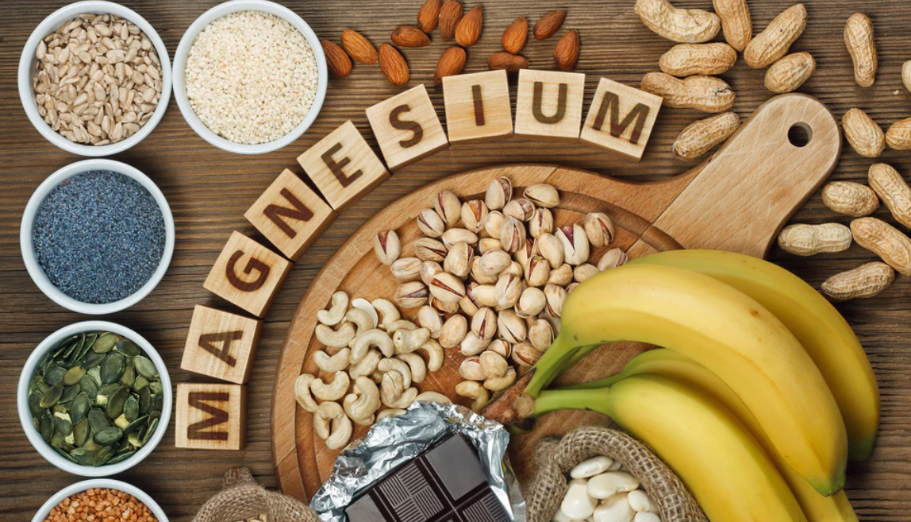

Classes of Food
-
Carbohydrate
- Starch
- Pasta
- Garri
Starch is a type of carbohydrate found in foods like potatoes, rice, and bread. It provides a significant source of energy for the body, as it breaks down into glucose during digestion. Including a variety of starchy foods in your diet helps maintain energy levels and supports overall nutritional balance.
Pasta is a carbohydrate-rich food made from wheat flour, water, and sometimes eggs. It is a staple in many cuisines worldwide, offering a versatile base for various sauces and ingredients. When consumed in moderation and as part of a balanced diet, pasta can contribute to sustained energy levels and satiety.
Garri is a popular carbohydrate-rich food in West Africa, particularly Nigeria, made from cassava tubers. It is processed by peeling, washing, grating, fermenting, and then roasting the cassava to produce coarse granules or flour. Garri can be consumed as a snack, soaked in water to make a dough-like consistency, or cooked into a porridge called "eba," providing a staple source of energy in the region.

-
Fat
- Butter
- Oil
- Nuts
Butter is a dairy-derived fat food made by churning cream or milk to separate the butterfat from the buttermilk. It is widely used in cooking and baking for its rich flavor and creamy texture. Butter can be spread on bread, used in sauces, or melted for sautéing, adding richness and enhancing the flavor of dishes.
Oil is a liquid fat derived from plants, seeds, or nuts through extraction processes such as pressing or refining. It is a versatile cooking ingredient used for frying, sautéing, baking, and salad dressings due to its high heat tolerance and neutral flavor. Different oils, like olive, coconut, and sunflower oil, offer varying health benefits and culinary uses based on their composition and smoke points.
Nuts are nutrient-dense foods that contain healthy fats, protein, vitamins, and minerals. They are primarily composed of unsaturated fats, such as monounsaturated and polyunsaturated fats, which are beneficial for heart health. Regular consumption of nuts, like almonds, walnuts, and peanuts, can contribute to a balanced diet and provide essential nutrients.
-
Protein
- Eggs
- Meat
- Beans
-
Vitamins
- Vitamins B1
- Vitamins B2
- Vitamins B3
-
Dietary Fibre
- Oats
- Vegetables
- Fruit
-
Minerals
- Calcium
- Magnesium
- Iron
Water
- Watermelon
- Cucumber
- Celery
Eggs are a highly nutritious protein food containing all nine essential amino acids required by the human body. They are versatile and can be prepared in various ways such as boiled, scrambled, fried, or used in baking and cooking. Eggs are also rich in vitamins and minerals like vitamin B12, vitamin D, and iron, making them a valuable addition to a balanced diet.
Meat is a rich source of protein essential for muscle growth, repair, and overall body function. It provides complete protein containing all essential amino acids needed by the human body. Different types of meat, such as beef, chicken, and pork, offer varying nutrient profiles and flavors, making them versatile ingredients in many cuisines worldwide.
Beans are a rich source of plant-based protein, making them an essential part of vegetarian and vegan diets. They provide a complete protein profile when combined with grains, offering all the essential amino acids needed by the body. Additionally, beans are low in fat and high in fiber, promoting both heart health and digestion.
Vitamin B1, also known as thiamine, is essential for converting carbohydrates into energy and supports proper nerve function. It plays a crucial role in muscle contraction, nerve signal transmission, and metabolism. A deficiency in vitamin B1 can lead to conditions such as beriberi and Wernicke-Korsakoff syndrome, which affect the cardiovascular and nervous systems.
Vitamin B2, or riboflavin, is crucial for energy production and the metabolism of fats, drugs, and steroids. It also acts as an antioxidant, helping to protect cells from oxidative damage. Riboflavin deficiency can lead to skin disorders, hyperemia, and edema of the mouth and throat, as well as a swollen, cracked tongue.
Vitamin B3, also known as niacin, is vital for converting food into energy and maintaining healthy skin, nerves, and digestion. It also plays a role in reducing cholesterol levels and improving heart health. A deficiency in vitamin B3 can lead to pellagra, characterized by symptoms such as dermatitis, diarrhea, and dementia.
Oats are an excellent source of dietary fiber, particularly beta-glucan, which has been shown to lower cholesterol levels and improve heart health. The soluble fiber in oats helps regulate blood sugar levels and promotes a feeling of fullness, aiding in weight management. Additionally, oats support digestive health by enhancing bowel regularity and preventing constipation.
Vegetables are rich in dietary fiber, which is crucial for maintaining a healthy digestive system and preventing constipation. The fiber in vegetables helps regulate blood sugar levels, lowers cholesterol, and supports weight management by promoting satiety. Consuming a variety of fiber-rich vegetables contributes to overall health by providing essential vitamins, minerals, and antioxidants.
Fruits are an excellent source of dietary fiber, which aids in digestion and helps prevent constipation. The fiber in fruits also contributes to heart health by lowering cholesterol levels and regulating blood sugar. Additionally, a diet rich in fiber from fruits supports weight management by promoting a feeling of fullness and reducing overall calorie intake.

Calcium is an essential mineral vital for building and maintaining strong bones and teeth. It also plays a crucial role in muscle function, nerve transmission, and blood clotting. Adequate calcium intake is important throughout life to prevent bone-related conditions such as osteoporosis and rickets.
Magnesium is a vital mineral involved in over 300 biochemical reactions in the body, including energy production, muscle and nerve function, and protein synthesis. It helps maintain normal blood pressure, supports a healthy immune system, and contributes to bone health. Magnesium deficiency can lead to symptoms such as muscle cramps, fatigue, and irregular heartbeats.
Iron is a crucial mineral that is essential for the production of hemoglobin, which transports oxygen in the blood. It also supports energy metabolism and is necessary for growth, development, and normal cellular functioning. A deficiency in iron can lead to anemia, characterized by fatigue, weakness, and impaired cognitive function.
Watermelon is a refreshing and hydrating fruit, composed of about 92% water, making it ideal for staying hydrated in hot weather. It is rich in vitamins A and C, and contains antioxidants such as lycopene, which support heart health and may reduce the risk of certain cancers. Additionally, watermelon provides a modest amount of dietary fiber and essential nutrients like potassium, contributing to overall health and wellness.

Cucumbers are hydrating vegetables, composed of about 95% water, making them an excellent choice for maintaining hydration. They are low in calories but rich in vitamins K and C, and provide a good source of antioxidants that help reduce inflammation and protect cells from damage. Additionally, cucumbers contain fiber, which supports digestive health and promotes regular bowel movements.
Celery is a low-calorie vegetable that is composed of about 95% water, making it excellent for hydration. It is a good source of vitamins A, K, and C, and provides antioxidants that help reduce inflammation and protect against cellular damage. Additionally, celery contains dietary fiber, which supports digestive health and can aid in weight management by promoting a feeling of fullness.